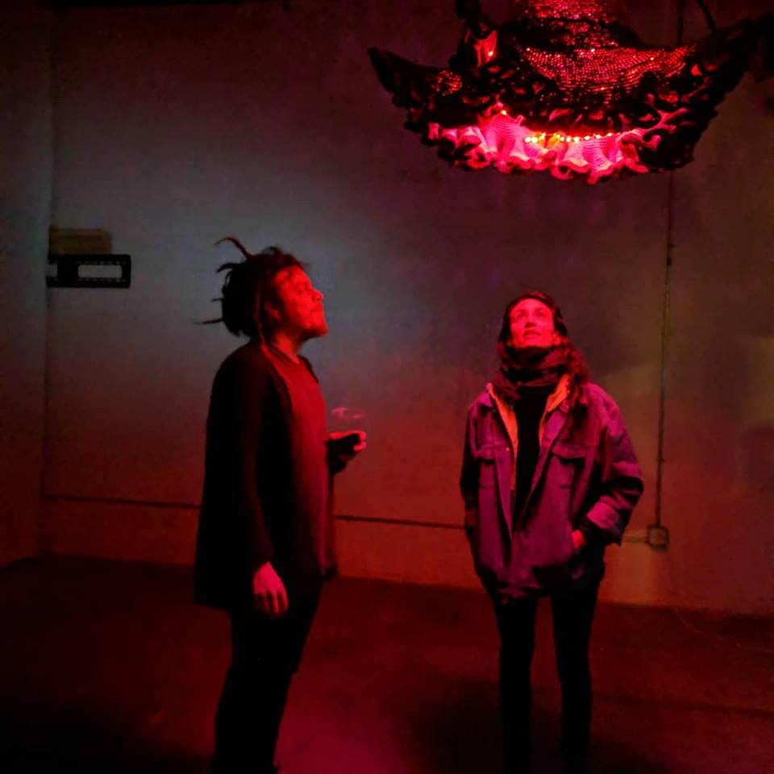

Art
My artistic practice explores mathematics through sculpture, computation, digital fabrication, textiles, and interactive media. These works emerge from my research in geometry, number theory, and visualization, often in collaboration with students, artists, and fellow mathematicians. Selected works are featured below, and several pieces have been exhibited in mathematical art exhibitions, museums, and galleries. Selected works are featured below.
**Indicates Undergraduate Collaborator**
Cubic Lines (2026)


Installation view, Maison Poincaré, Paris.
This piece depicts how a cubic surface arises as the blowup of six general points on the projective plane. The artwork is an artistic rendition of an interactive app we designed illustrating the same mathematical phenomenon. The artwork is being exhibited at Creation: Between Art and Mathematics at the Maison Poincaré museum in Paris, France.
Bohemian Eigenvalue Starscapes (2024)


This project explores the aesthetic implications of the beautiful interaction between linear algebra and number theory through the theory of eigenvalues. It was shown at the 2024 Joint Mathematics Meetings Art Exhibition in San Francisco, California and published in the associated catalog, which you can find here.
Twenty-Seven (2022)


A multimedia sculpture which also explores cubic surfaces, this time focusing on the 27 lines each cubic surface contains. We hoped to artistically represent the mathematical fact that a cubic surface is determined by its 27 lines. To do this, we left the interior empty except for the lines, letting our minds fill in the gaps, intuiting the curvature of the surface into which the linear skeleton is embedded. Twenty-Seven was shown at the 2023 Annual Meeting of the German Mathematical Society, published in w/k - Between Science and Art, and is currently searching for a permanent home.
A video which moves the viewer through the sculpture can be found here, and a more comprehensive website dedicated to the artwork can be found here. The publication is available here.
Rigid Algebraic Starscapes (2021)


Canvas prints of 4 starscapes which were exhibited at two mathematical art exhibitions.
These works explore visual patterns arising from algebraic integers and rigidity phenomena in algebraic number theory. The resulting images were exhibited at the 2022 MAA Golden Section Art Show and the 2023 Bridges Math Art in Halifax, Nova Scotia. They also appeared as the cover art for the Journal of Mathematics and the Arts. The artwork inspired theorems about Galois theory which led to a paper, published in the Journal of Mathematics and the Arts.
The Fabric of Spacetime (2019)



Installation view, DXARTS, Seattle.
We created a model of a young universe, combining crochet and electronics to create a dynamic and luminescent experience. The main physical component is a large, handcrocheted hyperbolic manifold, where stitches were added at an exponential rate. In this way, the circumference grows exponentially faster than the length, introducing negative curvature and resulting in the many folds. This technique was pioneered in 1997 by Daina Taimina, a mathematician at Cornell. The curvature is analogous to the geometry of a very young universe (much less than one second old), where the spatial dimensions grew exponentially with respect to the time dimension, introducing curvature in the geometry of spacetime itself.
This piece was exhibited at DXARTS in Seattle, and published in and featured on the cover of the AMS book Illustrating Mathematics edited by Diana Davis. A video of the sculpture moving can be found here and a more comprehensive website for the artwork can be found here.